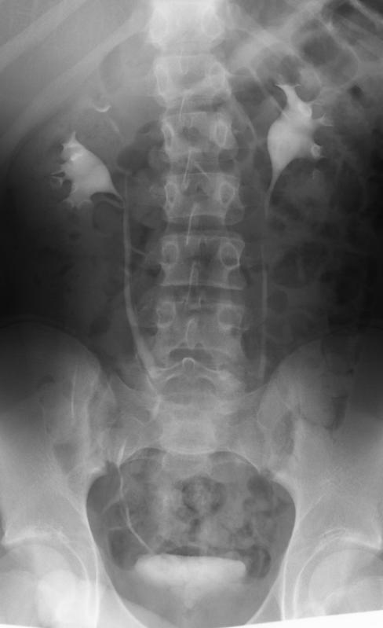
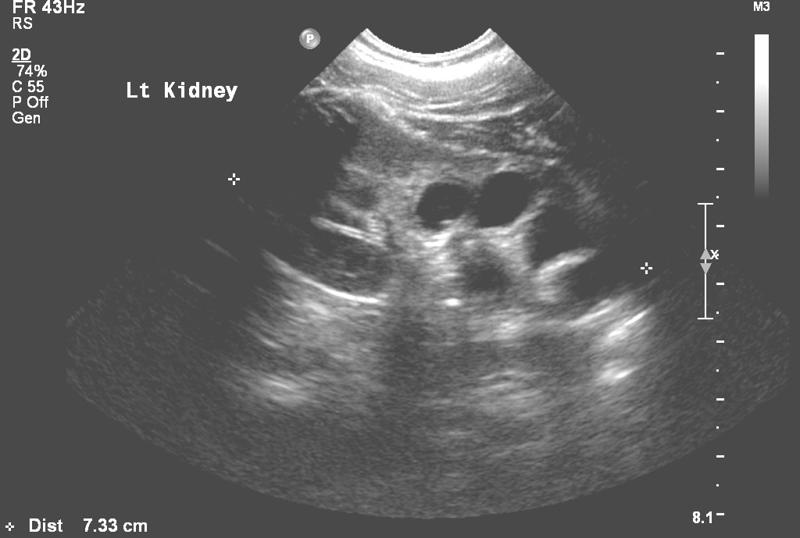
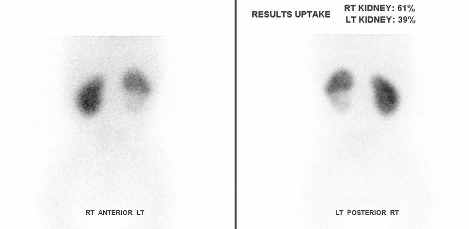
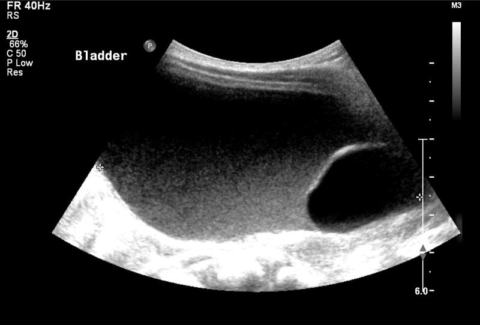
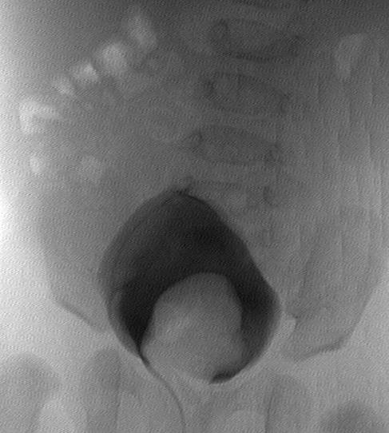

Duplex kidneys, ureteroceles and ectopic ureters
AK Taghizadeh
Consultant Paediatric Urologist
Evelina Children’s Hospital
London SE1 7EH
→ Enlace a la versión en español

AK Taghizadeh
Consultant Paediatric Urologist
Evelina Children’s Hospital
London SE1 7EH
→ Enlace a la versión en español
Duplex kidneys are a relatively common abnormality. Duplex kidneys may be associated with ureterocele, ectopic ureter insertion or vesicoureteric reflux (VUR). This chapter will discuss the terminology, incidence, embryology and pathophysiology of duplex kidneys. The management of reflux into duplex kidneys, ectopic ureters and ureteroceles will then be discussed.
Single system ectopic ureters and single system ureteroceles are distinct entities from those seen in duplex kidneys. For convenience discussion of the management of these conditions will be included in this chapter.
The terminology surrounding duplex kidneys has been conflicting. A standardized terminology was drawn up in 1984 by the American Academy of Pediatrics (AAP), and this has been widely adopted (1):
A duplex kidney has two separate pelvicalyceal systems.
A duplex or duplicated system describes a renal unit in which the kidney has two pelvicalyceal systems. It may include a kidney with single or bifid ureters or two ureters that drain separately into the bladder.
A bifid system has two pelvicalyceal systems that join at the pelviureteric junction or two ureters (bifid ureters) joining before entering the bladder. This represents a partial duplication.
Double Ureters are independent ureters that drain separately into the urinary or genital tract, and are seen in complete duplication.
Complete Duplication occurs when there are double ureters draining separately.
The upper (or lower) pole ureter is the ureter that drains the upper (or lower) pole of a duplex kidney.
An ectopic ureter is one that drains to an abnormal site. The term is often applied to a caudal ectopic ureter, which is one where the orifice lies at the proximal lip of the bladder neck or beyond.
An intravesical ureterocele is one that lies entirely within the bladder. It may also occur with a single system.
An ectopic ureterocele is one where some portion of the ureterocele is situated permanently at the bladder neck or in the urethra.
The incidence of duplex kidneys in post-mortem series is between 0.5-1.25% (2-4).
Duplex kidneys were identified in 1.8% of intravenous urograms performed in 5196 patients. In 69 (73%) of these patients the duplex kidney was considered to be an incidental finding (5). In this group, 30% of the duplex systems were complete duplex systems. The incidence of duplex kidneys is similar for left and right sides. Duplex kidneys are seen approximately twice as frequently in females as males (4;5). Duplex kidneys are bilateral in approximately one fifth.The number of antenatally detected cases is lower than the incidence observed in autopsy or radiology series. In a series of 19,750 women having antenatal scans, 13 foetus were identified with what was later confirmed as duplex kidney yielding an incidence of 0.6% (6), which the authors thought was an overestimate due to tertiary referral of complex kidneys. In 6,292 pregnant women scanned by 28 weeks a 0.04% incidence of duplex kidney was identified (7).
There appears to be a strong genetic predisposition. In those with duplex kidneys, up to 30% have relatives with compete duplex kidneys and two thirds with bifid systems, suggesting autosomal dominant inheritance with variable expression and incomplete penetrance (8-10).
The origin of the ureteric bud on the mesonephric duct is important for how well the kidney develops. A bud that originates from the “normal” zone of the mesonephric duct will strike the metanephros correctly and result in good renal development. However if the bud origin deviates from the normal zone, either too cranially or too caudally, it does not meet the metanephros properly and a poorly-formed, dysplastic renal segment results (13). Thus the more abnormally sited a ureteric orifice the greater the likelihood that the associated kidney pole of the duplex kidney will be abnormal and poorly functioning.
The cranial ureteric bud, which meets the upper moiety of the duplex, will migrate more caudally. Ultimately its position will be more medial and caudal than a normally situated ureteric orifice. This can result in a ureter that may insert into the urogenital canal or mesonephric duct structures. In boys, this would include the bladder, the prostatic urethra or the structures derived from the mesonephric duct: ejaculatory duct, seminal vesicle, vas deferens, epididymis. These structures all lie above the external urethral sphincter, and so will not cause incontinence. In girls, the ureter may insert into urogenital canal structures: bladder, urethra or distal vagina. The mesonephric duct regresses in girls leaving epoöphoron, paraoöphoron or Gartner’s cyst. Insertion of the ureteric bud into these structures may result in rupture through into adjacent paramesonphric duct structures resulting in ureteric insertion into the Fallopian tube, uterus or upper vagina. In girls therefore, an ectopic ureter can result in continuous urinary incontinence.A ureterocele is a ballooning of the terminal ureter as it enters the bladder. The embryology of ureteroceles is not as neatly explained and there are several theories. Persistence of a thin membrane of opposing urogenital and ureteric epithelium at the insertion of the ureter into the bladder may provide an explanation for obstructive ureteroceles (14). This does not explain the existence of ureteroceles with large or non-obstructed openings. Perhaps independently of obstruction, there may be an abnormality of collagen or muscle in the wall of the ureterocele (15;16). Another possibility is late arrival or the ureteric bud into the bladder allowing the ampullary origin of the ureteric bud to over-expand even before it has reached the bladder (17).
The development of a caecoureterocele requires a more complex explanation. It is possible that the distal ureter is affected by growth stimuli of adjacent structures. Stimulation of growth of the ureteric bud causes enlargement of the distal ureter and its opening. Further expansion of the ureter is brought about by the stimulus that causes bladder enlargement. Finally, a tongue of this part of the ureter is carried distally by the caudal migration of the Műllerian bulbs (18).
Although the lower pole ureter is most commonly affected by reflux, it can sometimes be affected by obstruction. This may occur as a result of compression from a abnormal dilated upper pole ureter (18). Duplex kidneys are susceptible to other pathologies; for example, pelviureteric junction obstruction can affect the lower pole in up to 2% (19).
The parenchyma of a duplex kidney is not distributed equally between the two poles (Figure 1).

In an IVU series, normal kidneys were observed to have a mean of 9.4 calyces whilst duplex kidneys had 11.3 calyces; the upper pole having 3.7 calyces and the lower pole 7.6 calyces (5). In general, the upper pole thus contributes about a third to the overall mass of renal parenchyma.
In general, the lower pole ureter of a complete duplex inserts more laterally into the bladder and will have a shorter and less oblique intramural course through the bladder wall than a normal ureter. This makes it more prone to reflux.
Reflux is a common finding in those with duplex kidneys. In one retrospective series of 24 patients with duplex kidneys who had a micturating cystogram, 15 (36%) were identified as having reflux (5). In a series of children under the age of six years presenting with UTI, 23 of 35 (66%) with complete duplex systems had VUR, grade III-V in 19 (54%). In the same series, 106 of 406 (26%) children with simplex kidney systems had VUR, 48% grade III-V (20). Even incomplete duplex systems seem to be associated with an increased incidence of VUR, with 17 of 36 (47%) systems affected eight with grade III-V reflux. In another study of girls presenting with UTI, 25 of 36 (69%) with complete duplex systems were found to have reflux (21): in 72% reflux was to the lower pole only, to upper and lower poles in 20%, and 8% of reflux was to the upper pole only. In 18 partial duplex kidneys VUR occurred in four (22%). These figures are similar to a 76% incidence of reflux in complete renal duplication detected by Fehrenbaker in a series of children presenting with UTI (22).
Lower pole VUR in duplex kidneys most commonly presents with UTI, with only a minority presenting on antenatal scans (23). If the lower moiety kidney is dysplastic or scarred, hypertension is another way the lower pole reflux may come to urological attention. Pain is an unusual presentation and other causes of loin pain should be looked for.
Investigation by ultrasound may show a dilated lower pole or dilated ureter (see Figure 2).

In infants, a micturating cystogram gives accurate information about the anatomy of the reflux. A Dimercaptosuccinic acid (DMSA) radionucleotide scan provides information about the function of the affected pole, and information about focal scarring (see Figure 3).

The natural history of VUR in duplex kidneys is one of spontaneous resolution in a large proportion. Rates of spontaneous resolution of VUR of 58% have been observed in those treated non-surgically (24). Spontaneous resolution of VUR in complete duplex kidneys is comparable to single kidneys (26), with 85% resolution of grade I-II and 36% resolution for grade III (25). However a more recent study found that when higher grades of reflux are included in the comparison the rate of spontaneous resolution is not as good (23). Only 7% of grade III VUR in duplex kidneys resolved, and none of the higher grades of VUR resolved over a mean follow-up of three and a half years.
The anatomy of the insertion of a refluxing lower pole ureter will make surgery more difficult. Therefore when formulating a management plan for a patient with a duplex kidney, it is especially important to be clear about the goal of treatment before embarking on a surgical plan. It is not appropriate to treat reflux in a duplex kidney simply because it is there. Indications for surgery for VUR in duplex kidneys are similar to those for reflux into single systems: failure of medical therapy to control pyrexial infections, or to prevent new scars.
A robust treatment of a refluxing duplex ureter is to re-implant it. Doing this necessitates that the lower pole and upper pole ureters are mobilized together in their common sheath and re-implanted together (27). A range of common-sheath intravesical re-implantations techniques in a series of 48 duplex renal units produced a 96% success rate in curing reflux (28). More recently there has been interest in extravesical detrusorrhaphy, which has the benefit of avoiding cystostomy. Success rates of 98% have been reported in a series of 51 units (29), or 95% in at series of 65 units (30). The procedure carries a risk of urinary retention, with 5% of children requiring a further two weeks of an indwelling urinary catheter and one patient requiring 6 weeks of intermittent catheterization (30).Recently, there has been a interest in performing ureteric re-implants laparoscopically or more accurately vesicoscopically (31;32). Two series demonstrate that it is technically possible to perform the procedure in duplex kidneys. However, at the time of writing, the long-term success of vesicoscopic ureteric re-implantation in patients with duplex kidneys has yet to be reported.
Uretero-ureterostomy is an alternative treatment. The diseased donor ureter is disconnected and anastomosed to the recipient ureter lying alongside. In the treatment of VUR, the advantages of this procedure are that there is no need to open the bladder, nor to perform ureteric tapering if the ureter is very dilated. Uretero-ureterostomy was originally described by Buchtel (33). The indications for uretero-ureterostomy extend beyond lower pole reflux to include treatment of ureters that are ectopic, associated with an ureterocele or have upper pole reflux. Published success rates are impressive (34-39). Potential complications include obstruction at the site of the anastomosis, yo-yo reflux through the anastomosis, or reflux into the retained ureteric stump. There has been renewed interest in the technique with the application of laparoscopic techniques either to make a distal ureteric anastomosis (40), or a more proximal anastomosis (41).
Endoscopic injection therapy to treat reflux is now widespread for single system kidneys. Initial concern about applying this method to ureters, with a significant co-existing anatomical abnormality such as a duplex ureter, seemed to be borne out by an early meta-analysis giving injection therapy a 50% success rate for duplex kidneys compared to 73% in single system kidneys. However a more recent review, which included a greater number of studies looking at duplex kidneys, gave injection therapy a much better account (42). This meta-analysis of injection treatment for reflux gave a success rate of 64% for duplex kidneys and 68% for single system kidneys, with no statistically significant difference between the two groups.
Where the lower pole of the duplex kidney is beyond salvage, its removal by hemi-nephrectomy is advocated (43;44). Removal of the lower pole can be slightly more difficult than an upper pole hemi-nephrectomy as the lower pole nests into the upper pole and so is trickier to separate. It can be difficult to access the most distal ureter from the approach required to perform a lower pole hemi-nephrectomy, so that a second incision may be required to completely remove the lower pole ureter. Fortunately reflux into the ureteric stump is not often a problem and a subsequent stump ureterectomy is required in less than 5% (45;46). A drop in differential function of the remaining renal moiety of about 6% following hemi-nephrectomy has been reported (47). It is not certain whether this represent a true drop or is the effect of the way regions of interest are drawn on renograms.
Hemi-nephrectomy is increasingly performed laparoscopically or retroperitonoscopically. These procedures are challenging, although outcomes equivalent to open surgery are reported (48-51). Urinary cysts and loss of function of the remaining moiety are complications that have been described with an incidence as high as 9% (49).Ectopic ureters are a relatively uncommon problem relating to duplex kidneys. In one series of children whose duplex kidneys were detected after presentation with UTI only one out of 35 (3%) was found to have had an ectopic ureter (20).
The problems caused by ectopic ureters relate to the way they insert into the genitourinary tract. In girls, ectopic ureters that drain below the level of the sphincter will result in continuous urinary incontinence. In boys, low ectopic insertion will result in the ureter draining into a mesonephric duct structure: ejaculatory duct, seminal vesicle, vas deferens or epididymis. Drainage into these structures may result in recurrent epididymo-orchitis. Ectopic insertion of ureters outside the bladder may result in impaired drainage, is associated with dilation and urinary tract infection.
Identifying the presence of an ectopic ureter associated with a duplex kidney can be difficult. This relates to the original embryology of the ectopic ureter and the position of origin of the ureteric bud giving rise to the ectopic ureter. The further the origin of the ectopic ureter bud from the normal zone, the greater the likelihood of impaired function and dysplasia of the related renal moeity (13). In practice, this means that the upper pole of a duplex kidney with an ectopic ureter may be very small and poorly functioning. Its small size makes it difficult to identify on morphological imaging, whilst its poor function means that when functional imaging is performed there is minimal uptake of tracer or contrast (52). Finding the opening to an ectopic ureter at cystoscopy or vaginoscopy may be difficult. It is therefore easy to understand the origin of the term “cryptic duplex” in relation to ectopic ureters. Identification of a duplex kidney with an ectopic ureter requires a high index of suspicion from the outset (52;53).Clinical examination of a girl with an ectopic ureter may identify continuous dripping of urine from the introitus. There may be perineal irritation from continuous leaking. It is sometimes possible to identify continuous leaking by asking the girl to sit directly on the paper towel covering an examination couch. After a few minutes the leaking will be confirmed by an area of wetness on the paper.
Renal ultrasound and antenatal scanning may provide a clue about the presence of an ectopic ureter if there is dilation of the ectopic ureter or its upper pole kidney.
In the past, intravenous urograms helped diagnose ectopic ureters. The upper pole does not effectively excrete contrast during the study, so its presence is alluded to by the absence of the upper pole calyces. A pelvicalyceal pattern described as the “drooping lily” is seen, with the ureter, pelvis and lower pole calyces opacifying (Figure1). Further clues are provided by a smaller number of calyces than expected and the abnormal axis of the visualised pelvicalyceal system. Today, intravenous urograms are now so rarely performed in children that the skills required to identify these subtle changes are probably not adequately practiced in most radiology departments.
CT scanning with contrast has been suggested as a possible investigation to successfully identify duplex kidneys with ectopic ureters (55). Magnetic resonance imaging (MRI) is probably a more useful test where a suspected upper pole of a potential duplex kidney has been hard to identify. It can pick up 10% more duplex kidneys than ultrasound (56-58). Even so, careful image acquisition and interpretation are required to maximize sensitivity. Allowing a delay for the upper pole to take up contrast may enhance the sensitivity of the MRI scan.
A reflection of how difficult it can be to identify ectopic ureters is the number of tests that have been suggested to help secure the diagnosis. Intravenous administration of indigo carmine (59) or bladder instillation of methylene blue have been suggested as methods to identify ectopic ureters by differential staining of urine from the ectopic and normal urinary tracts. Careful targeted cystoscopy and vaginoscopy may locate an ectopic ureteric opening, but identification can be difficult and the opening easily missed (52).
Ectopic ureters inserting into the urinary tract are frequently associated with reflux observed on micturating cystogram. A ureter placed above the sphincter will demonstrate the reflux during filling; a ureter placed below the sphincter will demonstrate reflux during voiding (54).
Treatment of a symptomatic ectopic ureter requires surgery. The upper pole kidney associated with an ectopic ureter is usually poorly functioning and so is appropriately treated by upper pole hemi-nephrectomy (60;61). Retaining the distal ureteric stump carries a less than 10% chance of re-operation for distal ureteric removal, whilst reducing the morbidity from a complete ureterectomy (62;63). Laparoscopic methods have been applied to hemi-nephrectomy (48;49;51;64). As with lower pole hemi-nephrectomy the laparoscopic procedure is challenging, with risks of retroperitoneal fluid collection, loss of renal tissue and hypertension.Where upper pole function is preserved, an alternative to hemi-nephrectomy is ureteric re-implantation. In this case, both ureters from the duplex kidney should be re-implanted together. Re-implantation, however, can be avoided by draining the upper pole into the lower pole system either with an uretero-ureterostomy or a uretero-pyelostomy (65). Today, laparoscopy has progressed to such reconstruction, and both laparoscopic uretero-ureterostomy and uretero-pyelostomy are described (41;66).
Describing ureteroceles as obstructive does not give an adequate account of the differences in how they behave. The AAP classification of ureteroceles (1), which distinguishes intravesical and ectopic ureteroceles, has the advantage of being simple and is widely used. Another classification regularly encountered in the literature was developed by Stephens et al (18). This classification is described below and includes differences in the way that ureteroceles act:
This is the most common type of ureterocele. The ureterocele lies within the bladder. Its orifice lies within the trigone and is obstructive. It corresponds to an intravesical ureterocele.
In this form of ureterocele, a rather dilated ureter courses through the submucosa of the bladder, and adopts a more normal calibre as it travels into the urethra. It has an opening at the level of the sphincter. Its orifice is not narrow, but drainage from the ureterocele is impaired by contraction of the sphincter. The associated ureterocele can be very large.
Here the ureterocele has an orifice that is at the level of the sphincter. Its narrow orifice further impedes its drainage so that the ureterocele remains inflated and obstructs the bladder outlet.
This form of ureterocele extends under the trigone and into the bladder outlet. No opening is identifiable. The dilated ureterocele can cause severe bladder outlet obstruction.
This type of ureterocele lies entirely within the bladder, and has a large opening which does not impede drainage of the ureterocele.
In a series of 60 ureteroceles: 40% were stenotic, one third sphincteric, 6% sphincterostenotic, 5% blind, 5% non-obstructive, and 5% a caecoureterocele (18).
The incidence of ureterocele at post-mortem is 1 in 500-4,000 (67;68). In patients who are identified as having duplex kidneys, 5-20% will be found to have ureteroceles (20;21). The majority of ureteroceles used to present with urinary tract infection. With improvement in antenatal scanning half to three quarters are detected antenatally (69-72).
It is common for ureteroceles to obstruct the upper pole of the affect kidney from which they have arisen (73). It is possible for further obstruction to occur. The lower pole ureter may be obstructed by the dilated upper pole ureter. A ureterocele that obstructs the bladder outlet will affect the contralateral kidney as well.
Co-existing vesicoureteric reflux is common, affecting the ipsilateral lower pole in half, and the contralateral kidney in a quarter (74). Abnormal bladder function is common in children with ureterocele. More than half will have abnormally large bladders, and residual volumes are common (75). Stones have been observed in a large proportion of adult patients presenting with ureterocele (76).
Investigation of a ureterocele is aimed at confirming its presence, describing its structure (intravesical or ectopic) and identifying coexisting pathology (e.g. VUR, lower pole and bladder outlet obstruction).
The ureterocele and its associated dilated ureter and upper pole are usually identified on ultrasound (see Figure 4).

Care should be taken that a dilated distal ureter adjacent to a bladder is not mistaken for a ureterocele. A ureterocele that is collapsed may be missed at the time of ultrasound scanning. A careful ultrasound can give useful information about the extent of the ureterocele and the thickness of its posterior wall.
Micturating cystogram is an invaluable investigation in the patient with a ureterocele (see Figure 5).

It identifies its size, and the relationship of the fundus and base of the ureterocele to the bladder neck and urethra, indicating possible bladder outlet obstruction. Additional baseline information about VUR is obtained. Care should be taken that an everted ureterocele is not miss-identified as a paraureteric diverticulum (77).
A Dimercaptosuccinic acid (DMSA) radionucleotide scan is useful to confirm poor function in the upper pole and also provides a baseline prior to surgery.
A combination of ultrasound and micturating cystogram can often distinguish intravesical from ectopic ureteroceles. However this is not always possible, and cystoscopy may be required to make the distinction in up to a quarter (78). When performing cystoscopy care must be taken not to obliterate the ureterocele; ideally the patient should be well hydrated, and irrigation flow kept to a minimum.Given the complexity and variation in the anatomy of ureteroceles, it is perhaps not surprising that there is no clear consensus on the management of ureteroceles. The goals of treatment can be conflicting: the aim of minimising damage from obstruction of the upper tract and the bladder, the desire to offer single or minimal treatments, the goal of avoiding iatrogenic problems such as new reflux or bladder outlet obstruction, and the desire to effect definite anatomical correction. Thus there are several possible treatment approaches that can be offered to a patient with a ureterocele, with distinct recommendations made for intravesical and ectopic ureteroceles. Broadly, the treatment options range between conservative treatment, ureterocele puncture, upper pole hemi-nephrectomy and ureterocele excision with bladder neck repair and re-implantation.
Expectant management of antenatally detected ureteroceles may be a successful treatment avoiding potentially difficult surgery and its complications. Leaving dysplastic renal tissue in situ may not pose an increased risk of hypertension (79). The main concern over expectant management of ureteroceles is the predisposition of an obstructed hydronephrotic kidney to infection.
Non-surgical treatment of ureteroceles was suggested by Rickwood et al (80). They reported on the outcome of ureterocele treatment, and observed that a subgroup treated expectantly did very well. This was subsequently elaborated on. Patients with ureterocele with poorly functioning upper poles, and reflux of less than grade IV (making up 27% of their patients with ureterocele) did not develop infection or require surgery over a median follow up of 8 years, often with an improvement in hydronephrosis, or collapse of the ureterocele (81).In a different series, 13 patients were selected for conservative treatment on the basis of non-obstruction on their mercapto-acetyl-triglycine (MAG3) scan and grade III or less VUR and followed for a median of four years (72). Only four required operation for break through infection or increasing dilation. In those who were managed non-surgically, all VUR resolved.
Successful conservative treatment was also reported by Direnna and Leonard (82). A select minority of their patients (with no lower pole or bladder neck obstruction, less than grade IV reflux, and upper poles that drained if they were functioning) had no infection and required no surgery after a median follow-up of five years. In four patients the hydronephrosis improved and in one the ureterocele collapsed. Reflux improved or resolved in three out of four with lower pole reflux.
This approach can be successfully applied to ureteroceles associated with a multicystic dysplastic kidney (83), with only one UTI in a group of those being treated expectantly.
Sauvage et al, initially took a different stance (84). However, on assessing their outcomes from surgery for ureterocele, they were disappointed by their own operative results. They suggested that a period of careful observation might be useful in stratifying which patients actually require surgery and in which surgery can be altogether avoided.This treatment strategy is sometimes referred to as a “simple treatment”. The upper pole of the kidney associated with a significant ureterocele usually has minimal function. Removing the upper pole by hemi-nephrectomy will remove an obstructed system predisposed to urinary tract infection. Removal, combined with suction of the distal ureter at the time of operation will also bring about collapse and decompression of the ureterocele. Co-existing reflux to the lower pole is then expected to resolve in the majority (85). However, Husmann et al found reflux was not solved by hemi-nephrectomy; 15% of those without pre-existing reflux developed reflux, and reflux continued after hemi-nephrectomy in 84% of those with pre-existing reflux (86).
A significant advantage of hemi-nephrectomy is that difficult surgery at the bladder neck and distal ureter is avoided and re-operation is evaded in 85% (87;88). Incontinence following hemi-nephrectomy has been reported in 6% (89). Bladder dysfunction is probably an inherent problem associated with ureterocele and not related to hemi-nephrectomy. Nevertheless, there is a concern that the simple approach may be associated with UTI, diverticula and even bladder outlet obstruction (90).
One group reports a success rate of 80% for the simple approach (70). This is slightly worse than the re-operation rate for bladder neck reconstruction in the same study. However, the authors noted that reconstruction was associated with more severe complications. They therefore recommend the simple approach for the majority of patients in the absence of high grade reflux.A further modification is to perform upper pole hemi-nephrectomy laparoscopically (91;92). This is a technically difficult procedure even for an experienced laparoscopic surgeon. Conversion to open is required in upto 12.5%, perirenal collections are seen in a fifth, and it is not yet clear if the re-operation rate is comparable to open hemi-nephrectomy.
Endoscopic treatment of ureteroceles by puncture is a potentially very attractive solution. Puncturing the ureterocele using cystoscopy is an operation with much lower perioperative morbidity than the alternatives of upper pole nephrectomy or bladder neck reconstruction. It can almost be performed as day-case surgery. An individual puncture carries only a 10-20% chance of repeat puncture being required (69;93;94). It may even be possible that some upper pole function may be recovered.
Recovery of upper pole function following ureterocele puncture is often cited as a reason for performing ureterocele puncture (95). One series of neonatal ureterocele puncture managed to produce a mean upper pole function of 8% (96). However recovered function is likely to be limited if underlying poor function is because of dysplasia rather than obstruction (80;97-99), and histology studies often indicate dysplasia rather than inflammation to be the main feature in the upper pole.
The main criticism of ureterocele puncture as a treatment modality is the need for further surgery, despite adequate decompression. In a meta-analysis of 912 patients undergoing endoscopic treatment of their ureteroceles 47% went on to have further surgery (100). The chance of re-operation is higher when the ureterocele is ectopic compared to intravesical (relative risk 2.78), in a duplex system compared to a single system (relative risk 1.41) or if there is pre-existing reflux (relative risk 1.56). With extended and longer term follow-up the re-operation rate can climb to 71% (69;101).The most common indication for re-operation is VUR. This can affect half the patients having a ureterocele puncture (94;95) and commonly affects the upper pole in about a third (102). Ureterocele puncture can result in resolution of some pre-existing VUR (103). Treatment of VUR following ureterocele puncture has usually been by reconstruction. However, the minimally invasive approach of ureterocele puncture has been extended by some groups to the treatment of VUR, with success rates of 60-70% reported for cystoscopic injection therapy (103-105).
Antenatal diagnosis of ureteroceles opens the possibility of antenatal intervention for ureteroceles. Puncture of ureterocele may be considered in utero where there are features of bladder outlet obstruction, for example where there is oligo- or anhydramnios. There are case reports of successful foetal intervention (106-110), but results of larger case series and longer follow-up are awaited.
Puncture should not be regarded as a universal treatment for ureterocele but should have a defined role. For the child presenting with an acute infection it can provide emergency relief of obstruction (70;86). Puncture has a high success rate for intravesical ureteroceles, and for these puncture can be offered as a definitive treatment (100;111-114). For ectopic ureteroceles, a high rate of re-operation should be expected. Here, ureterocele puncture should be viewed as part of a staged procedure: either making subsequent reconstructive surgery easier (69;115), or enabling VUR to be controlled cystoscopically (103-105).The intent of bladder neck reconstruction in the management of ureterocele is correcting the anatomical abnormalities that are encountered with ureteroceles. It may include all or part of the following: excision of the ureterocele, repairing the weakness of the bladder neck and bladder wall, re-implantation of the associated ureters, and hemi-nephrectomy of a poorly functioning upper pole. Marsupialisation of the ureterocele, rather than its complete excision, may be performed to avoid difficult dissection in the urethra (116). The benefit of reconstruction is that the functional problems associated with the ureterocele can all be corrected: VUR, sphincter weakness, and bladder outlet obstruction from the ureterocele, primarily or iatrogenically created (90).
Reconstruction may be offered as either the primary or secondary treatment. Reconstruction surgery is difficult, especially when performed on a young infant. In early life the risk of UTI is a particular concern, and so ureterocele puncture may be performed to control this early risk. Reconstruction can then be performed at an age when reconstruction surgery is easier. Alternatively reconstruction has been performed as a primary procedure with good effect. Excellent results were reported in a group of 16 patients undergoing primary repair with a mean follow up of more than five years (115). In a series of 40 patients with ectopic ureterocele reported by De Jong et al (78), all underwent upper pole hemi-nephrectomy, ureterocele excision, bladder neck reconstruction, re-implantation and even colposuspension at a single operation. All children became clinically continent, although many children had a tendency to void infrequently, five requiring biofeedback because of bladder-sphincter dysfunction, three requiring temporary intermittent catheterization. The same group reported longer term follow up of similar patients (117). After a median follow-up of 9 years, 31% of patients who were treated with primary bladder surgery required re-operation. Re-operation was performed endoscopically in all, either for reflux or obstructive voiding. Incontinence was seen in 7%, and 20% had dysfunctional voiding requiring bio-feedback.A more sanguine view of reconstruction is provided by others. One series reported a success rate of 83% for primary reconstruction, but the authors warned of the possibility of major complications for this difficult surgery (70). In another a series of girls undergoing reconstruction for bilateral ureterocele, 70% had significant post-operative residuals and a fifth needed to perform intermittent catheterization (118). Another group reported a 20% incidence of UTI following reconstruction, and a 13% incidence of bladder dysfunction (119).
Uretero-ureterostomy may be combined with ureteric re-implantation of the less dilated ureter with good outcome (39).
One of the advantages of uretero-ureterostomy is that it can be performed through a small incision. However, even this morbidity may be reduced by performing the operation laparoscopically (40;41).
In conclusion, no single procedure provides a universal treatment for all ureteroceles. A few generalisations may be made: ureterocele puncture is appropriate for emergency decompression of acutely infected systems and for intravesical ureteroceles; upper pole hemi-nephrectomy carries a good success rate where there is no associated reflux. Even so, the treatment for ureteroceles should be tailored to the individual patient.
A fifth of all ureteroceles occur in single systems, as opposed to duplex systems (122;123). Single system ureteroceles are most commonly intravesical and the associated kidneys often have reasonable function. The majority of single system ureteroceles presenting in childhood are detected antenatally (124).
Investigation should begin with a renal ultrasound. Hydronephrosis may be absent in up to two thirds (125). They can often be small and missed. Vesicoureteric reflux into the ureterocele is not seen (124;125). MAG3 scanning is useful to quantify function in the affected kidneys, and to provide information about drainage of the affected system.
If there is no obstruction or reflux of the affected kidney then non-surgical treatment is appropriate (82) and good outcomes should be expected from conservative treatment If the ureterocele impairs the drainage of an affected kidney then surgery is indicated. Transurethral puncture or incision of the ureterocele is much more likely to be successful in simplex system ureteroceles than in duplex kidneys. Re-operation rates for ureteroceles in single systems are low, with rates of 0-25% quoted (95;112;113;126).
About one fifth of ectopic ureters are associated with single system kidneys (127). Some report that they are more common in boys (128-130), others that there is a female preponderance in India and Japan (131;132), and yet others found an equal distribution in boys and girls (133).
Single system ectopic ureters are frequently associated with other congenital problems, including anorectal, oesophageal and renal tract anomalies (128;129;133). About half of those with single system ectopic ureters present during investigation of other anomalies, the remainder with either incontinence or infection.
Renal dysplasia is common. However, unlike duplex ectopic ureters, single system ectopic ureters are associated with kidneys with reasonable function. For example, in one series of single system ectopic ureters, three-quarters of the kidneys were worth preserving (132). Another series found that five out of twelve kidneys associated with single ectopic ureters were dysplastic, and two out of the twelve kidneys were absent (134).Diagnosis of single system ectopic ureters can prove difficult. On micturating cystogram, reflux can be demonstrated in only half (128). Initial cystoscopy can fail to identify the ectopic ureter in two-thirds (134).
Bilateral ectopic ureters are a rare and distinct malformation affecting girls (133). Neither ureter drains into the bladder which is small with a poorly developed sphincter. It is possible that during development the abnormal origin of both ureteric bud results in poor mesenchymal induction of the urogenital structures. This results in failure of normal development of the bladder and the bladder neck. Both the sphincter and reservoir functions of the bladder are severely effected (135;136). Thus although the child may present with incontinence, ureteric re-implantation will fail to correct the incontinence (137). One review of the literature back to 1937 found that despite surgery only 20% became continent (138).
Achieving continence requires ureteric re-implantation, improvement of bladder storage and improvement in bladder outlet resistance. Ureteric re-implantation is difficult because of the small bladder size. Creation of a window between a distal ureter and the bladder may, by allowing bladder cycling, allow reasonable bladder capacity to develop and possibly avoid the need for bladder outlet procedures and augmentation (119;139) . Bladder capacity may be improved with enterocystoplasty. A variety of bladder outlet procedures have been described in this context: Young-Dees-Leadbetter bladder neck reconstruction (140), Kropp procedure, pubovaginal sling (136), bladder neck closure (141), and artificial urinary sphincter (142;143).
Note that the majority of the calyces belong to the lower pole. In a situation where the upper pole is non-functioning and dilated, one can imagine that the lower pole calyces are displaced inferiorly and laterally giving the appearance of a “drooping lily”.
Note that in this case the urine in the bladder is more echogenic than that in the ureterocele, implying poor bladder emptying.
Note the ureterocele extending into the urethra and the associated reflux into the dilated lower pole ureter.
(1) Glassberg KI, Braren V, Duckett JW, Jacobs EC, King LR, Lebowitz RL et al. Suggested terminology for duplex systems, ectopic ureters and ureteroceles. J Urol 1984; 132(6):1153-1154.
(2) Campbell MF. Surgical treatment of anomalies of upper urinary tract in children. Journal of the American Medical Assoication 1936; 106:193-196.
(3) Goyanna R, Green LF. The pathologic and anomalous conditions associated with duplication of the renal pelvis and ureter. Journal of Urology 1945; 54:1-9.
(4) Nation EF. Duplication of the kidney and ureter: a statistical study of 230 new cases. Journal of Urology 1944; 51:456-465.
(5) Privett JT, Jeans WD, Roylance J. The incidence and importance of renal duplication. Clin Radiol 1976; 27(4):521-530.
(6) Vergani P, Ceruti P, Locatelli A, Mariani E, Paterlini G, Zorloni C et al. Accuracy of prenatal ultrasonographic diagnosis of duplex renal system. J Ultrasound Med 1999; 18(7):463-467.
(7) Livera LN, Brookfield DS, Egginton JA, Hawnaur JM. Antenatal ultrasonography to detect fetal renal abnormalities: a prospective screening programme. BMJ 1989; 298(6685):1421-1423.
(8) Atwell JD, Cook PL, Howell CJ, Hyde I, Parker BC. Familial incidence of bifid and double ureters. Arch Dis Child 1974; 49(10):825-826.
(9) Cohen N, Berant M. Duplications of the renal collecting system in the hereditary osteo-onycho-dysplasia syndrome. J Pediatr 1976; 89(2):261-263.
(10) Atwell JD, Cook PL, Strong L, Hyde I. The interrelationship between vesico-ureteric reflux, trigonal abnormalities and a bifid pelvicalyceal collecting system: a family study. Br J Urol 1977; 49(2):97-107.
(11) Weigert C. Ûber einige Bildungsfehler der Ureteren. Virchow's Arch 1877; 70:490.
(12) Meyer R. Normal and abnormal development of the ureter in the human embryo; a mechanistic consideration. Anat Rec 1946; 96(4):355-371.
(13) Mackie GG, Stephens FD. Duplex kidneys: a correlation of renal dysplasia with position of the ureteral orifice. J Urol 1975; 114(2):274-280.
(14) Chwalla R. The process of formation of cystic dilation of the vesical end of the ureter and of diverticulum at the ureteral ostium. Urol Cutan Rev 1927; 31(8):499.
(15) Stephens FD. Ureterocele in infants and children. Aust N Z J Surg 1958; 27(4):288-295.
(16) Uson AC. A classification of ureteroceles in children. J Urol 1961; 85:732-738.
(17) Tanagho EA. Embryologic basis for lower ureteral anomalies: a hypothesis. Urology 1976; 7(5):451-464.
(18) Ureteroceles on duplex ureters. In: Stephens F, Smith E, Hutson J, editors. Congenital anomalies of the kidney, urinary and genital tracts. London: Martin Dunitz, 2002: 243-262.
(19) Gonzalez F, Canning DA, Hyun G, Casale P. Lower pole pelvi-ureteric junction obstruction in duplicated collecting systems. BJU Int 2006; 97(1):161-165.
(20) Siomou E, Papadopoulou F, Kollios KD, Photopoulos A, Evagelidou E, Androulakakis P et al. Duplex collecting system diagnosed during the first 6 years of life after a first urinary tract infection: a study of 63 children. J Urol 2006; 175(2):678-681.
(21) Bisset GS, III, Strife JL. The duplex collecting system in girls with urinary tract infection: prevalence and significance. AJR Am J Roentgenol 1987; 148(3):497-500.
(22) Fehrenbaker LG, Kelalis PP, Stickler GB. Vesicoureteral reflux and ureteral duplication in children. J Urol 1972; 107(5):862-864.
(23) Afshar K, Papanikolaou F, Malek R, Bagli D, Pippi-Salle JL, Khoury A. Vesicoureteral reflux and complete ureteral duplication. Conservative or surgical management? J Urol 2005; 173(5):1725-1727.
(24) Peppas DS, Skoog SJ, Canning DA, Belman AB. Nonsurgical management of primary vesicoureteral reflux in complete ureteral duplication: is it justified? J Urol 1991; 146(6):1594-1595.
(25) Lee PH, Diamond DA, Duffy PG, Ransley PG. Duplex reflux: a study of 105 children. J Urol 1991; 146(2 ( Pt 2)):657-659.
(26) Ben Ami T, Gayer G, Hertz M, Lotan D, Boichis H. The natural history of reflux in the lower pole of duplicated collecting systems: a controlled study. Pediatr Radiol 1989; 19(5):308-310.
(27) Belman AB, Filmer RB, King LR. Surgical management of duplication of the collecting system. J Urol 1974; 112(3):316-321.
(28) Ellsworth PI, Lim DJ, Walker RD, Stevens PS, Barraza MA, Mesrobian HG. Common sheath reimplantation yields excellent results in the treatment of vesicoureteral reflux in duplicated collecting systems. J Urol 1996; 155(4):1407-1409.
(29) Minevich E, Tackett L, Wacksman J, Sheldon CA. Extravesical common sheath detrusorrhaphy (ureteroneocystotomy) and reflux in duplicated collecting systems. J Urol 2002; 167(1):288-290.
(30) Barrieras D, Lapointe S, Houle H. Is common sheath extravesical reimplantation an effective technique to correct reflux in duplicated collecting systems? J Urol 2003; 170(4 Pt 2):1545-1547.
(31) Valla JS, Steyaert H, Griffin SJ, Lauron J, Fragoso AC, Arnaud P et al. Transvesicoscopic Cohen ureteric reimplantation for vesicoureteral reflux in children: a single-centre 5-year experience. J Pediatr Urol 2009; 5(6):466-471.
(32) Chung PH, Tang DY, Wong KK, Yip PK, Tam PK. Comparing open and pneumovesical approach for ureteric reimplantation in pediatric patients--a preliminary review. J Pediatr Surg 2008; 43(12):2246-2249.
(33) Buchtel HA. Uretero-ureterostomy. J Urol 1965; 93:153-157.
(34) Bracci U, Miano L, Laurenti C. Ureteroureterostomy in complete ureteral duplication. Eur Urol 1979; 5(6):347-351.
(35) Huisman TK, Kaplan GW, Brock WA, Packer MG. Ipsilateral ureteroureterostomy and pyeloureterostomy: a review of 15 years of experience with 25 patients. J Urol 1987; 138(5):1207-1210.
(36) Smith FL, Ritchie EL, Maizels M, Zaontz MR, Hsueh W, Kaplan WE et al. Surgery for duplex kidneys with ectopic ureters: ipsilateral ureteroureterostomy versus polar nephrectomy. J Urol 1989; 142(2 Pt 2):532-534.
(37) Choi H, Oh SJ. The management of children with complete ureteric duplication: selective use of uretero-ureterostomy as a primary and salvage procedure. BJU Int 2000; 86(4):508-512.
(38) Lashley DB, McAleer IM, Kaplan GW. Ipsilateral ureteroureterostomy for the treatment of vesicoureteral reflux or obstruction associated with complete ureteral duplication. J Urol 2001; 165(2):552-554.
(39) Chacko JK, Koyle MA, Mingin GC, Furness PD, III. Ipsilateral ureteroureterostomy in the surgical management of the severely dilated ureter in ureteral duplication. J Urol 2007; 178(4 Pt 2):1689-1692.
(40) Gonzalez R, Piaggio L. Initial experience with laparoscopic ipsilateral ureteroureterostomy in infants and children for duplication anomalies of the urinary tract. J Urol 2007; 177(6):2315-2318.
(41) Storm DW, Modi A, Jayanthi VR. Laparoscopic ipsilateral ureteroureterostomy in the management of ureteral ectopia in infants and children. J Pediatr Urol 2010.
(42) Hensle TW, Reiley EA, Ritch C, Murphy A. The clinical utility and safety of the endoscopic treatment of vesicoureteral reflux in patients with duplex ureters. J Pediatr Urol 2010; 6(1):15-22.
(43) Sakellaris G, Hennayake S, Cervellione RM, Dickson AP, Gough D. Outcome study of lower pole heminephrectomy in children. Scand J Urol Nephrol 2009; 43(6):482-485.
(44) Mor Y, Mouriquand PD, Quimby GF, Soonawalla PF, Zaidi SZ, Duffy PG et al. Lower pole heminephrectomy: its role in treating nonfunctioning lower pole segments. J Urol 1996; 156(2 Pt 2):683-685.
(45) Cain MP, Pope JC, Casale AJ, Adams MC, Keating MA, Rink RC. Natural history of refluxing distal ureteral stumps after nephrectomy and partial ureterectomy for vesicoureteral reflux. J Urol 1998; 160(3 Pt 2):1026-1027.
(46) Androulakakis PA, Stephanidis A, Antoniou A, Christophoridis C. Outcome of the distal ureteric stump after (hemi)nephrectomy and subtotal ureterectomy for reflux or obstruction. BJU Int 2001; 88(6):586-589.
(47) Gundeti MS, Ransley PG, Duffy PG, Cuckow PM, Wilcox DT. Renal outcome following heminephrectomy for duplex kidney. J Urol 2005; 173(5):1743-1744.
(48) Janetschek G, Seibold J, Radmayr C, Bartsch G. Laparoscopic heminephroureterectomy in pediatric patients. J Urol 1997; 158(5):1928-1930.
(49) Wallis MC, Khoury AE, Lorenzo AJ, Pippi-Salle JL, Bagli DJ, Farhat WA. Outcome analysis of retroperitoneal laparoscopic heminephrectomy in children. J Urol 2006; 175(6):2277-2280.
(50) Singh RR, Wagener S, Chandran H. Laparoscopic management and outcomes in non-functioning moieties of duplex kidneys in children. J Pediatr Urol 2010; 6(1):66-69.
(51) You D, Bang JK, Shim M, Ryu DS, Kim KS. Analysis of the late outcome of laparoscopic heminephrectomy in children with duplex kidneys. BJU Int 2010; 106(2):250-254.
(52) Share JC, Lebowitz RL. The unsuspected double collecting system on imaging studies and at cystoscopy. AJR Am J Roentgenol 1990; 155(3):561-564.
(53) Mandell J, Stevens PS, Lucey DT. Management of the unsuspected ectopic ureterocele. J Urol 1978; 120(4):496-497.
(54) Wyly JB, Lebowitz RL. Refluxing urethral ectopic ureters: recognition by the cyclic voiding cystourethrogram. AJR Am J Roentgenol 1984; 142(6):1263-1267.
(55) Hanson GR, Gatti JM, Gittes GK, Murphy JP. Diagnosis of ectopic ureter as a cause of urinary incontinence. J Pediatr Urol 2007; 3(1):53-57.
(56) Avni FE, Nicaise N, Hall M, Janssens F, Collier F, Matos C et al. The role of MR imaging for the assessment of complicated duplex kidneys in children: preliminary report. Pediatr Radiol 2001; 31(4):215-223.
(57) Staatz G, Rohrmann D, Nolte-Ernsting CC, Stollbrink C, Haage P, Schmidt T et al. Magnetic resonance urography in children: evaluation of suspected ureteral ectopia in duplex systems. J Urol 2001; 166(6):2346-2350.
(58) Lipson JA, Coakley FV, Baskin LS, Yeh BM. Subtle renal duplication as an unrecognized cause of childhood incontinence: diagnosis by magnetic resonance urography. J Pediatr Urol 2008; 4(5):398-400.
(59) Dias R, Ward JN. Aids in diagnosis of suspect ectopic ureters in female patients. Urology 1978; 11(4):393-394.
(60) Mandell J, Bauer SB, Colodny AH, Lebowitz RL, Retik AB. Ureteral ectopia in infants and children. J Urol 1981; 126(2):219-222.
(61) Mor Y, Goldwasser B, Ben Chaim J, Raviv G, Leibovitch I, Jonas P. Upper pole heminephrectomy for duplex systems in children: a modified technical approach. Br J Urol 1994; 73(5):584-585.
(62) De Caluwe D, Chertin B, Puri P. Fate of the retained ureteral stump after upper pole heminephrectomy in duplex kidneys. J Urol 2002; 168(2):679-680.
(63) Ade-Ajayi N, Wilcox DT, Duffy PG, Ransley PG. Upper pole heminephrectomy: is complete ureterectomy necessary? BJU Int 2001; 88(1):77-79.
(64) Wang DS, Bird VG, Cooper CS, Austin JC, Winfield HN. Laparoscopic upper-pole heminephrectomy for ectopic ureter: surgical technique. J Endourol 2003; 17(7):469-473.
(65) el Ghoneimi A, Miranda J, Truong T, Monfort G. Ectopic ureter with complete ureteric duplication: conservative surgical management. J Pediatr Surg 1996; 31(4):467-472.
(66) Lowe GJ, Canon SJ, Jayanthi VR. Laparoscopic reconstructive options for obstruction in children with duplex renal anomalies. BJU Int 2008; 101(2):227-230.
(67) Uson AC, Lattimer JK, Melicow MM. Ureteroceles in infants and children: a report based on 44 cases. Pediatrics 1961; 27:971-983.
(68) Campbell M. Ureterocele; a study of 94 instances in 80 infants and children. Surg Gynecol Obstet 1951; 93(6):705-718.
(69) Jayanthi VR, Koff SA. Long-term outcome of transurethral puncture of ectopic ureteroceles: initial success and late problems. J Urol 1999; 162(3 Pt 2):1077-1080.
(70) Gomes J, Mendes M, Castro R, Reis A. Current role of simplified upper tract approach in the surgical treatment of ectopic ureteroceles: a single centre's experience. Eur Urol 2002; 41(3):323-327.
(71) Chertin B, Rabinowitz R, Pollack A, Koulikov D, Fridmans A, Hadas-Halpern I et al. Does prenatal diagnosis influence the morbidity associated with left in situ nonfunctioning or poorly functioning renal moiety after endoscopic puncture of ureterocele? J Urol 2005; 173(4):1349-1352.
(72) Han MY, Gibbons MD, Belman AB, Pohl HG, Majd M, Rushton HG. Indications for nonoperative management of ureteroceles. J Urol 2005; 174(4 Pt 2):1652-1655.
(73) Churchill BM, Sheldon CA, McLorie GA. The ectopic ureterocele: a proposed practical classification based on renal unit jeopardy. J Pediatr Surg 1992; 27(4):497-500.
(74) Caldamone AA, Snyder HM, III, Duckett JW. Ureteroceles in children: followup of management with upper tract approach. J Urol 1984; 131(6):1130-1132.
(75) Abrahamsson K, Hansson E, Sillen U, Hermansson G, Hjalmas K. Bladder dysfunction: an integral part of the ectopic ureterocele complex. J Urol 1998; 160(4):1468-1470.
(76) Lieb J, Abrahams HM, Das AK. Endoscopic management of milk of calcium-filled ureterocele stump. J Endourol 2003; 17(10):917-918.
(77) Bellah RD, Long FR, Canning DA. Ureterocele eversion with vesicoureteral reflux in duplex kidneys: findings at voiding cystourethrography. AJR Am J Roentgenol 1995; 165(2):409-413.
(78) de Jong TP, Dik P, Klijn AJ, Uiterwaal CS, van Gool JD. Ectopic ureterocele: results of open surgical therapy in 40 patients. J Urol 2000; 164(6):2040-2043.
(79) Husmann DA. Renal dysplasia: the risks and consequences of leaving dysplastic tissue in situ. Urology 1998; 52(4):533-536.
(80) Rickwood AM, Reiner I, Jones M, Pournaras C. Current management of duplex-system ureteroceles: experience with 41 patients. Br J Urol 1992; 70(2):196-200.
(81) Shankar KR, Vishwanath N, Rickwood AM. Outcome of patients with prenatally detected duplex system ureterocele; natural history of those managed expectantly. J Urol 2001; 165(4):1226-1228.
(82) Direnna T, Leonard MP. Watchful waiting for prenatally detected ureteroceles. J Urol 2006; 175(4):1493-1495.
(83) Coplen DE, Austin PF. Outcome analysis of prenatally detected ureteroceles associated with multicystic dysplasia. J Urol 2004; 172(4 Pt 2):1637-1639.
(84) Sauvage P, Becmeur F, Moog R, Kauffmann I. Is one-stage ureterocele repair possible in children? Eur Urol 2002; 42(6):607-613.
(85) Androulakakis PA, Michael V, Polychronopoulou S, Aghioutantis C. Surgical treatment of ectopic ureteroceles and the role of heminephrectomy with subtotal ureterectomy. Child Nephrol Urol 1990; 10(2):85-87.
(86) Husmann D, Strand B, Ewalt D, Clement M, Kramer S, Allen T. Management of ectopic ureterocele associated with renal duplication: a comparison of partial nephrectomy and endoscopic decompression. J Urol 1999; 162(4):1406-1409.
(87) Decter RM, Sprunger JK, Holland RJ. Can a single individualized procedure predictably resolve all the problematic aspects of the pediatric ureterocele? J Urol 2001; 165(6 Pt 2):2308-2310.
(88) DeFoor W, Minevich E, Tackett L, Yasar U, Wacksman J, Sheldon C. Ectopic ureterocele: clinical application of classification based on renal unit jeopardy. J Urol 2003; 169(3):1092-1094.
(89) Husmann DA, Ewalt DH, Glenski WJ, Bernier PA. Ureterocele associated with ureteral duplication and a nonfunctioning upper pole segment: management by partial nephroureterectomy alone. J Urol 1995; 154(2 Pt 2):723-726.
(90) Hendren WH, Mitchell ME. Surgical correction of ureteroceles. J Urol 1979; 121(5):590-597.
(91) Denes FT, Danilovic A, Srougi M. Outcome of laparoscopic upper-pole nephrectomy in children with duplex systems. J Endourol 2007; 21(2):162-168.
(92) Valla JS, Breaud J, Carfagna L, Tursini S, Steyaert H. Treatment of ureterocele on duplex ureter: upper pole nephrectomy by retroperitoneoscopy in children based on a series of 24 cases. Eur Urol 2003; 43(4):426-429.
(93) Chertin B, Fridmans A, Hadas-Halpren I, Farkas A. Endoscopic puncture of ureterocele as a minimally invasive and effective long-term procedure in children. Eur Urol 2001; 39(3):332-336.
(94) Chertin B, De Caluwe D, Puri P. Is primary endoscopic puncture of ureterocele a long-term effective procedure? J Pediatr Surg 2003; 38(1):116-119.
(95) Jelloul L, Berger D, Frey P. Endoscopic management of ureteroceles in children. Eur Urol 1997; 32(3):321-326.
(96) Smith C, Gosalbez R, Parrott TS, Woodard JR, Broecker B, Massad C. Transurethral puncture of ectopic ureteroceles in neonates and infants. J Urol 1994; 152(6 Pt 1):2110-2112.
(97) Abel C, Lendon M, Gough DC. Histology of the upper pole in complete urinary duplication--does it affect surgical management? Br J Urol 1997; 80(4):663-665.
(98) Androulakakis PA, Michael V, Stefanidis A. Endoscopic management of ureteroceles in children. Eur Urol 1998; 34(2):163.
(99) Bolduc S, Upadhyay J, Sherman C, Farhat W, Bagli DJ, McLorie GA et al. Histology of upper pole is unaffected by prenatal diagnosis in duplex system ureteroceles. J Urol 2002; 168(3):1123-1126.
(100) Byun E, Merguerian PA. A meta-analysis of surgical practice patterns in the endoscopic management of ureteroceles. J Urol 2006; 176(4 Pt 2):1871-1877.
(101) Barthold JS. Individualized approach to the prenatally diagnosed ureterocele. J Urol 1998; 159(3):1011-1012.
(102) Castagnetti M, Cimador M, Sergio M, de Grazia E. Transurethral incision of duplex system ureteroceles in neonates: does it increase the need for secondary surgery in intravesical and ectopic cases? BJU Int 2004; 93(9):1313-1317.
(103) Chertin B, Mohanan N, Farkas A, Puri P. Endoscopic treatment of vesicoureteral reflux associated with ureterocele. J Urol 2007; 178(4 Pt 2):1594-1597.
(104) Diamond T, Boston VE. Reflux following endoscopic treatment of ureteroceles. A new approach using endoscopic subureteric Teflon injection. Br J Urol 1987; 60(3):279-280.
(105) Perez-Brayfield M, Kirsch AJ, Hensle TW, Koyle MA, Furness P, Scherz HC. Endoscopic treatment with dextranomer/hyaluronic acid for complex cases of vesicoureteral reflux. J Urol 2004; 172(4 Pt 2):1614-1616.
(106) Ashmead GG, Mercer B, Herbst M, Moodley J, Bota A, Elder JS. Fetal bladder outlet obstruction due to ureterocele: in utero "colander" therapy. J Ultrasound Med 2004; 23(4):565-568.
(107) Austin PF, Cain MP, Casale AJ, Hiett AK, Rink RC. Prenatal bladder outlet obstruction secondary to ureterocele. Urology 1998; 52(6):1132-1135.
(108) Hansen WF, Cooper CS, Yankowitz J. Ureterocele causing anhydramnios successfully treated with percutaneous decompression. Obstet Gynecol 2002; 99(5 Pt 2):953-956.
(109) Quintero RA, Homsy Y, Bornick PW, Allen M, Johnson PK. In-utero treatment of fetal bladder-outlet obstruction by a ureterocele. Lancet 2001; 357(9272):1947-1948.
(110) Soothill PW, Bartha JL, Tizard J. Ultrasound-guided laser treatment for fetal bladder outlet obstruction resulting from ureterocele. Am J Obstet Gynecol 2003; 188(4):1107-1108.
(111) Blyth B, Passerini-Glazel G, Camuffo C, Snyder HM, III, Duckett JW. Endoscopic incision of ureteroceles: intravesical versus ectopic. J Urol 1993; 149(3):556-559.
(112) Cooper CS, Passerini-Glazel G, Hutcheson JC, Iafrate M, Camuffo C, Milani C et al. Long-term followup of endoscopic incision of ureteroceles: intravesical versus extravesical. J Urol 2000; 164(3 Pt 2):1097-1099.
(113) Di Renzo D, Ellsworth PI, Caldamone AA, Chiesa PL. Transurethral puncture for ureterocele-which factors dictate outcomes? J Urol 2010; 184(4 Suppl):1620-1624.
(114) Pfister C, Ravasse P, Barret E, Petit T, Mitrofanoff P. The value of endoscopic treatment for ureteroceles during the neonatal period. J Urol 1998; 159(3):1006-1009.
(115) Gran CD, Kropp BP, Cheng EY, Kropp KA. Primary lower urinary tract reconstruction for nonfunctioning renal moieties associated with obstructing ureteroceles. J Urol 2005; 173(1):198-201.
(116) Lewis JM, Cheng EY, Campbell JB, Kropp BP, Liu DB, Kropp K et al. Complete excision or marsupialization of ureteroceles: does choice of surgical approach affect outcome? J Urol 2008; 180(4 Suppl):1819-1822.
(117) Beganovic A, Klijn AJ, Dik P, de Jong TP. Ectopic ureterocele: long-term results of open surgical therapy in 54 patients. J Urol 2007; 178(1):251-254.
(118) Sherman ND, Stock JA, Hanna MK. Bladder dysfunction after bilateral ectopic ureterocele repair. J Urol 2003; 170(5):1975-1977.
(119) Shimada K, Matsumoto F, Matsui F. Surgical treatment for ureterocele with special reference to lower urinary tract reconstruction. Int J Urol 2007; 14(12):1063-1067.
(120) Bieri M, Smith CK, Smith AY, Borden TA. Ipsilateral ureteroureterostomy for single ureteral reflux or obstruction in a duplicate system. J Urol 1998; 159(3):1016-1018.
(121) Prieto J, Ziada A, Baker L, Snodgrass W. Ureteroureterostomy via inguinal incision for ectopic ureters and ureteroceles without ipsilateral lower pole reflux. J Urol 2009; 181(4):1844-1848.
(122) Elder JS, Diaz M, Caldamone AA, Cendron M, Greenfield S, Hurwitz R et al. Endoscopic therapy for vesicoureteral reflux: a meta-analysis. I. Reflux resolution and urinary tract infection. J Urol 2006; 175(2):716-722.
(123) Snyder HM, Johnston JH. Orthotopic ureteroceles in children. J Urol 1978; 119(4):543-546.
(124) Di B, V, Morrison-Lacombe G, Bagnara V, Monfort G. Transurethral puncture of ureterocele associated with single collecting system in neonates. J Pediatr Surg 1997; 32(9):1325-1327.
(125) Stenotic ureterocele on uncomplicated ureters. In: Stephens F, Smith E, Hutson J, editors. Congenital anomalies of the kidney, urinary and genital tracts. London: Martin Dunitz, 2002: 183-186.
(126) Hagg MJ, Mourachov PV, Snyder HM, Canning DA, Kennedy WA, Zderic SA et al. The modern endoscopic approach to ureterocele. J Urol 2000; 163(3):940-943.
(127) Schulman CC. The single ectopic ureter. Eur Urol 1976; 2(2):64-69.
(128) Ahmed S, Barker A. Single-system ectopic ureters: a review of 12 cases. J Pediatr Surg 1992; 27(4):491-496.
(129) Gill B. Ureteric ectopy in children. Br J Urol 1980; 52(4):257-263.
(130) Johnston JH, Davenport TJ. The single ectopic ureter. Br J Urol 1969; 41(4):428-433.
(131) Gotoh T, Morita H, Tokunaka S, Koyanagi T, Tsuji I. Single ectopic ureter. J Urol 1983; 129(2):271-274.
(132) Wakhlu A, Dalela D, Tandon RK, Chandra H, Wakhlu AK. The single ectopic ureter. Br J Urol 1998; 82(2):246-251.
(133) Chowdhary SK, Lander A, Parashar K, Corkery JJ. Single-system ectopic ureter: a 15-year review. Pediatr Surg Int 2001; 17(8):638-641.
(134) Freedman ER, Rickwood AM. Urinary incontinence due to unilateral vaginally ectopic single ureters. Br J Urol 1994; 73(6):716-717.
(135) Mogg RA. Some observations on the ectopic ureter and ureterocele. J Urol 1967; 97(6):1003-1012.
(136) Williams DI, Lightwood RG. Bilateral single ectopic ureters. Br J Urol 1972; 44(2):267-273.
(137) Cox CE, Hutch JA. Bilateral single ectopic ureter: a report of 2 cases and review of the literature. J Urol 1966; 95(4):493-497.
(138) Herndon CD, Ferrer FA, McKenna PH. A complex urologic problem demonstrates how far pediatric urology has progressed. Conn Med 1999; 63(12):707-711.
(139) Johnin K, Narita M, Kim CJ, Wakabayashi Y, Yoshiki T, Okada Y. Bilateral single ectopic ureters with hypoplastic bladder: how should we treat these challenging entities? J Pediatr Urol 2007; 3(3):243-246.
(140) Ritchey ML, Kramer SA, Benson RC, Jr., Kelalis PP. Bilateral single ureteral ectopia. Eur Urol 1988; 14(1):41-45.
(141) Jayanthi VR, Churchill BM, Khoury AE, McLorie GA. Bilateral single ureteral ectopia: difficulty attaining continence using standard bladder neck repair. J Urol 1997; 158(5):1933-1936.
(142) Gonzalez R, Nguyen DH, Koleilat N, Sidi AA. Compatibility of enterocystoplasty and the artificial urinary sphincter. J Urol 1989; 142(2 Pt 2):502-504.
(143) Heuser M, Zoller G, Seseke F, Zappel H, Ringert RH. Bladder dysfunction in children with bilateral single ectopic ureters. J Pediatr Surg 2002; 37(5):E15.
 |
 |
 |
 |
 |
 |
 |
 |